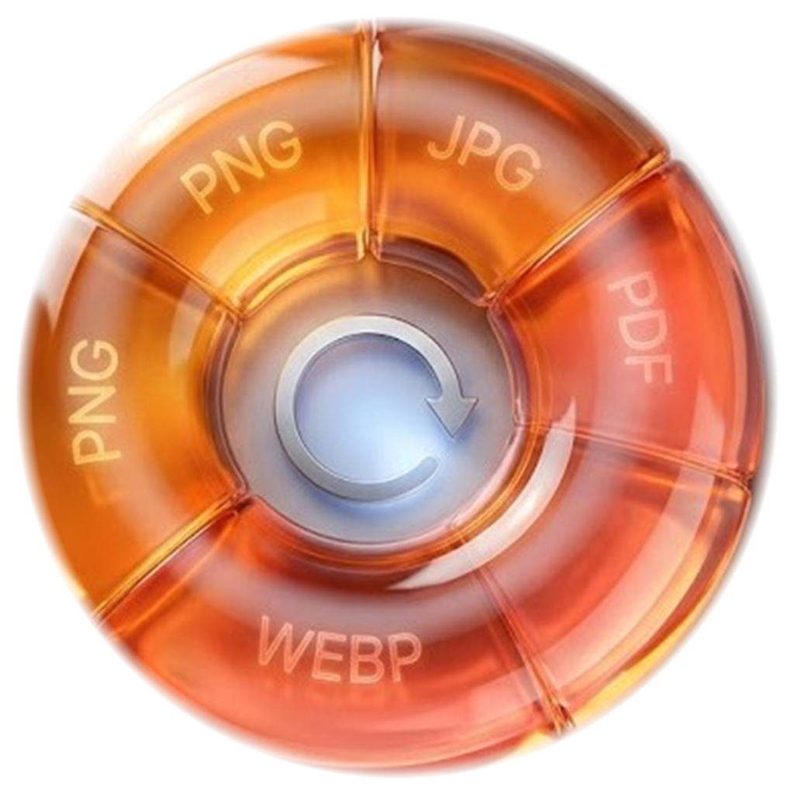

Hold Shift
Start dragging a file from Finder or Windows Explorer and Donut appears exactly where you need it.
File conversion, reimagined
Donut is the calm, beautifully simple way to convert images and documents. Hold Shift, drag, drop, done.
Available for Windows 10+ and macOS 13+

The simple way
Start dragging a file from Finder or Windows Explorer and Donut appears exactly where you need it.
Drop onto JPG, PNG, PDF, WebP, HEIC, or TIFF. The radial HUD keeps every option one glance away.
Your converted file lands beside the original, never overwrites it, and keeps you in your flow.
Made for your workflow
Donut uses native image technology to preserve detail, metadata, and the character of your original file wherever the format allows.
Selected output
A compact, reliable choice for everyday photos and sharing.
A quieter utility
Donut lives in your menu bar or tray until the moment you need it. No dashboard. No clutter. Just a beautiful, focused action.
Made for people who make
Export a clean PNG, a compact JPG, or a print-ready TIFF without leaving your flow.
Keep quality high, preserve originals, and prepare a whole batch for sharing.
Give everyone one simple, private tool that works the same on Mac and Windows.
Built with intention
Everything important is close. Everything unnecessary stays out of the way.
Good to know
No. Conversion happens locally on your computer. Your files never leave your device.
Never. Converted files are saved beside the original with a safe, collision-free name.
JPG, PNG, WEBP, HEIC, TIFF, and PDF are available in the Donut workflow on Windows and macOS.
Yes. Once installed, Donut is designed to work without an internet connection.
Ready when you are
One small utility. A much smoother way to work.
Choose your platform
A calm, native file converter for the way you work. Pick your platform to get started.